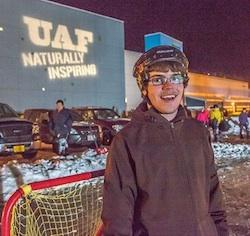

Some might call us nerds or geeks. They may be right, but we are also wizards. We write complicated spells in languages held universally true. We spend hours in front of our digital grimoires carefully crafting large sets of mystic words and symbols to accomplish amazing feats. We test them extensively at each stage of the development process (and add semicolons where needed) until we develop the perfect tool, the perfect incantation, to solve the world’s problems. The keyboard is mightier than the sword, and from behind the scenes we use ours to benefit mankind.
Computer science is essentially wizardry, and it is just as important as real wizardry. This module will help you learn the basics of computer hardware (using Raspberry Pis), networking (setting up local networks and basic websites), and web-based programming (with Javascript, HTML, and CSS). After learning the basics and completing a few simple tasks, we will focus on whatever the group is interested in, whether that is making video games or websites or hardware interfaces or all of the above and more. No prior experience is required, but you should feel decently comfortable around computers and know how to treat them (and your peers) well.
 Noah | Instructor